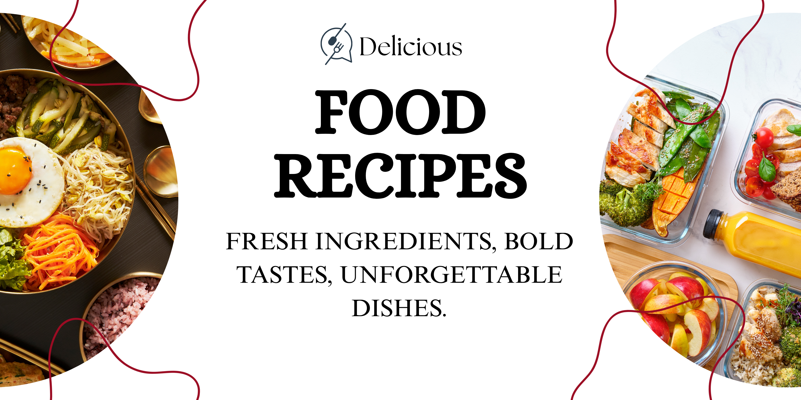
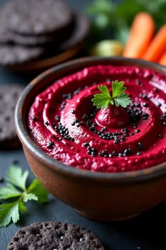
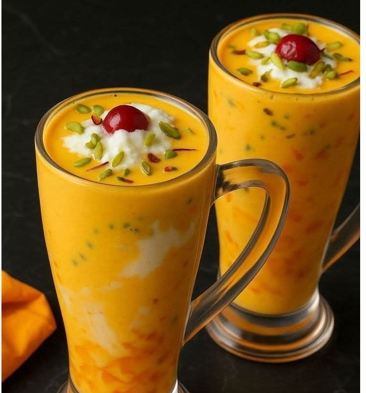
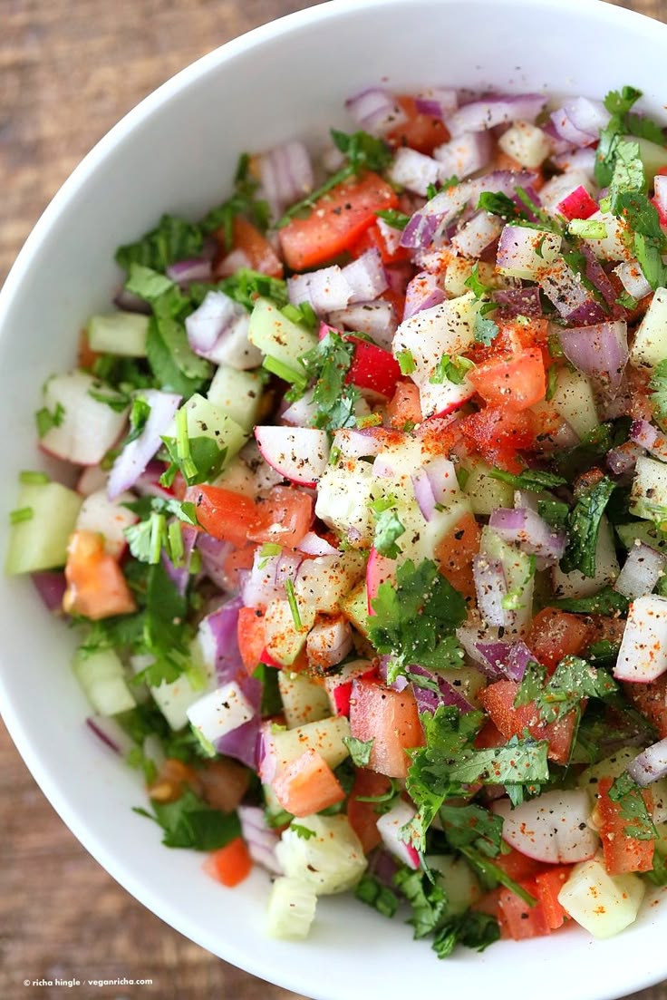
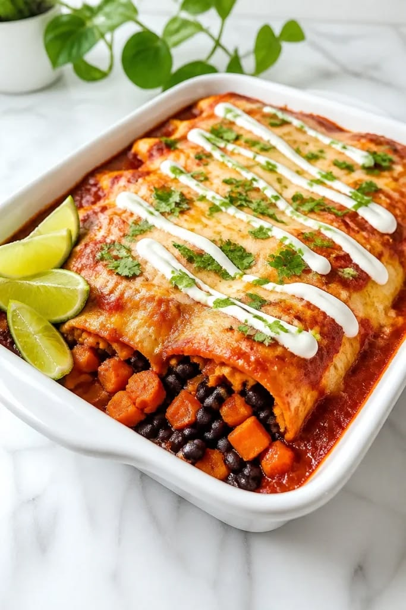

Recipe
Finder
Home
Recipes
Gallery
Home
/
Recipes
/ All Recipes
Elevate Your Daily Kitchen Routine...

View all of our recipes
Crisp Chicken-Burger
Fast Food
4 servings
40 minutes

Beetroot Hummus
Side dish
2 servings
15 minutes
Chocolate Strawberry Fudge Cake
Dessert
4 to 8 servings
1 hour
Steamed Dumplings(Momos)
Snack, Starter
2 to 4 servings
45 minutes
Hakka Noodles
Starter
2 to 3 servings
30 minutes
Masala Dosa with Chutneys
Breakfast
2 servings
20-25 minutes

Mango Milkshake
Drink
1 to 2 servings
30 minutes

Chopped Salad
Snack
4
10 minutes

Loaded Burrito
Main course
4 servings
50 minutes
Golgapa Panpuri
Snack, Starter
2 to 4 servings
50 minutes
view Ingredient gallery